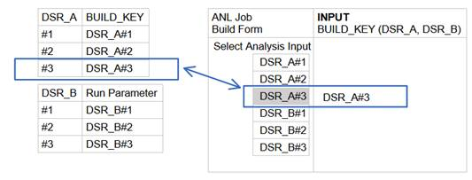
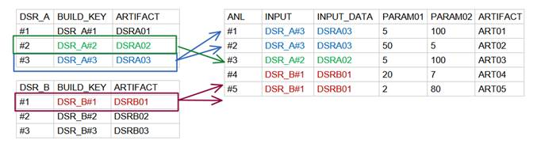
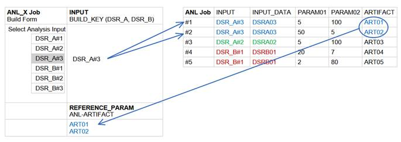
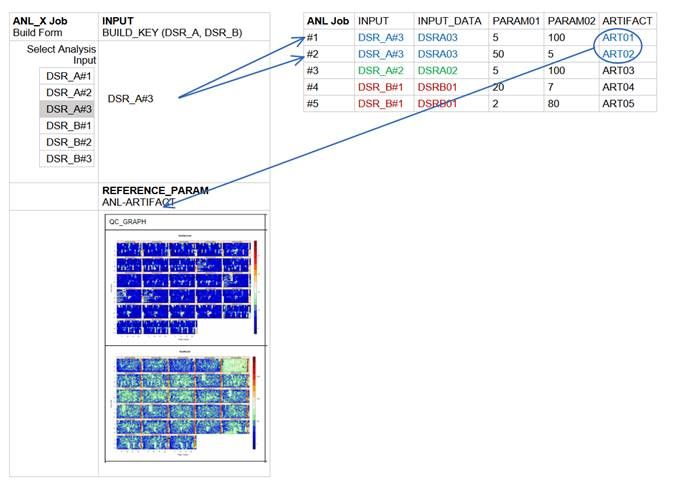

V2: Metadata
Monday, January 6, 2020
5:03 PM
Introduction
We have previously discussed the Jenkins "operational" challenge of relating different Jenkins builds and artifacts. See http://biouno.org/2016/10/22/Jenkins-Metadata-Introduction.html
Jenkins build configuration, parameters and input output artifacts are stored separately on the file system of a Jenkins server. When Jenkins starts, it builds an in-memory Jenkins model from the XML configuration and build files of every project, as well as from the jobs file structure. However, there is no dedicated RDBMS (relational database management system) backing up this Jenkins model and no attempt is made to formally relate builds to each other. Once the server is shutdown, the model is lost and needs to be rebuild from scratch on the next restart.
So, given these limitations, how can we introduce build relationships that are so important for research applications and data science use of Jenkins?
Let's summarize some vocabulary from the previous post:
|
Build Type |
Artifact Type |
|
Data-source build |
Data |
|
Analysis build |
Data |
|
Metadata only build |
Metadata |
For this discussion the format of the artifacts is of no concern (it can be binary, CSV, java properties, XML or JSON). We want to focus on the relationships between the different build types.
Build Relationships
Let's discover the possible relationships between as we try to answer the question posed in the first part of this blog
1. How can we relate artifacts generated from metadata-only builds to their input data?
a. In this case the relationship we are establishing is a one-to-many as the same input data can be used multiple times to generate metadata from multiple builds
Remember that
o Metadata is generated from manual annotation (i.e. build) by a user. For example the user could define experimental controls, replicates and groups associated with a data-source
o Metadata is generated from an analysis (i.e. build) performed on the data-source. Such builds can analyze the structure of the data, identify outliers, or identify samples of interest
o Metadata is generated from a visualization analysis performed on the data-source. Such builds can produce interactive graphs that can help users interactively explore the data-source
Relational builds in Jenkins
Note, we are now limiting our discussion to freestyle, parametrized Jenkins projects, as they provide interactive build forms suitable for Jenkins research and data-science applications.
As is the case for a RDBMS, we need a common key to establish a relationship between two builds (entities) in the Jenkins model. Luckily the Jenkins model already provides a unique sequential key for each build, the BUILD_NUMBER.
Jenkins also includes a run parameter type, for parametrized builds that can be used to reference (relate) a build of another project. The value of a run parameter is the absolute URL to the job build.
A composite key (the JOB_NAME appended with the BUILD_NUMBER) is even more useful and creates a unique reference to a job build. We will call such a composite key a BUILD_KEY, and conveniently format it as:
BUILD_KEY=JOB_NAME#BUILD_NUMBER.
Using build keys as build parameters, we can relate one project build to another build (from the same or other project). Later we will talk about how we can implement and enhance BUILD_KEYs using Active Choices parameters.
|
Note: When one uses pipeline compatible steps the Run Selector Plugin (https://jenkins.io/doc/pipeline/steps/run-selector/) |
A build reference example
Let's assume that we have two data-source Jenkins projects (jobs), DSR_A and DSR_B, and a third analysis project ANL that uses as input artifacts from either of the two data-source projects
Now, a user that configures the ANL build will select the INPUT parameter value from the available builds of one of the data-sources. The available artifacts are shown on the left and a schematic of the ANL build form on the right.

Using a BUILD_KEY for the ANL INPUT parameter, introduces a DSR build unique reference that can be used to relate the ANL builds with the corresponding data-source input build.
Note that each of the analysis builds, ANL, includes additional parameters (INPUT_DATA,PARAM01,PARAM02) and generates a new ARTIFACT as output.
Let's now review the Jenkins model after a few more ANL builds.

We have successfully established a relational model between the DSR project builds (used as input) and the ANL analysis builds that reference them. The DSR and ANL projects can be easily joined via the KEY=INPUT relation.
This model directly addresses the first question on 'how we can associate metadata-only build artifacts to their input data'. The second question we posed, was whether
1. Can we reference previous metadata artifacts when re-using the data source from another project?
Given our model above, the question can be rephrased as follows:
If a second analysis project, ANL_X, uses the same data-sources as ANL can the ANL artifacts be referenced (before or after) the ANL_X build starts?
The before option is of interest for data-science applications where the outcome of ANL analysis can provide feedback on the input data or guide the selection of parameters for ANL_X analysis.

Again the relational model that we established supports the discovery and reuse of previous metadata artifacts for the same data source.
We can now easily imagine an Active Choice parameter displaying a visualization or group statistics for each of the ART01 or ART02 artifacts.
